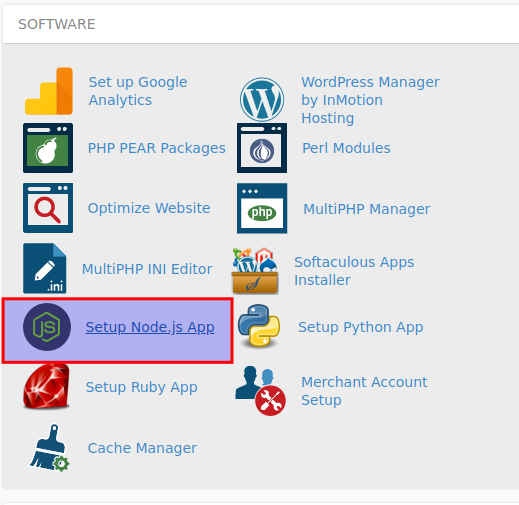
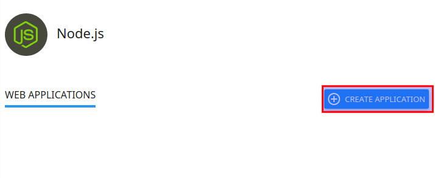
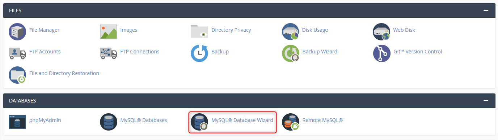
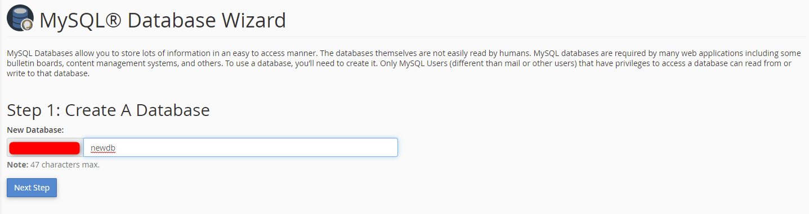
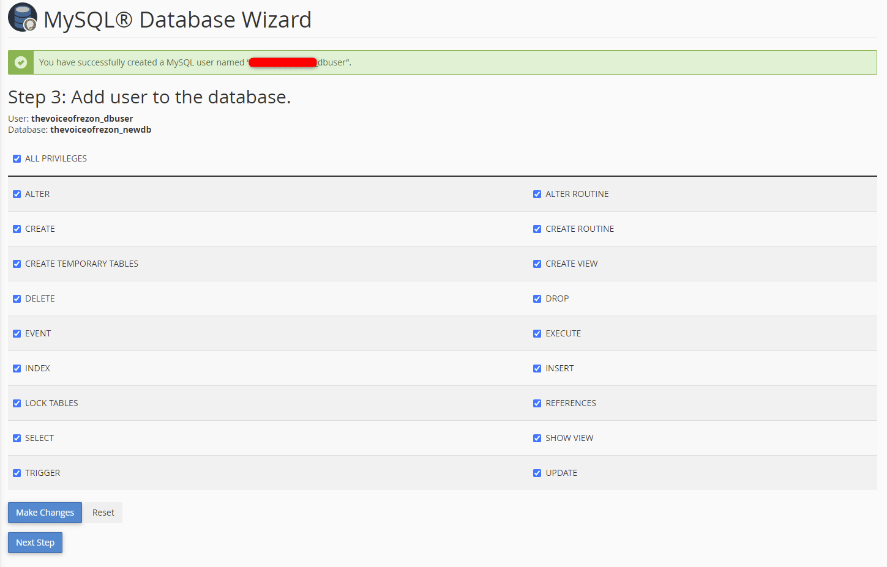
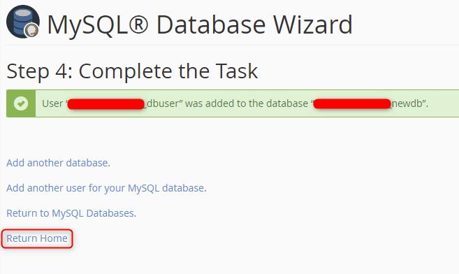

Getting Start
Welcome to SS Accounts Manager
SS ACCOUNTS MANAGER (SAM) is Software as a Service (SaaS) base complete accounts solution. It is Financial Accounts Software. It’s developed by React.js, Next.js, Bootstrap CSS, HTML5 on Frontend and Rest API integration with Node.js, Express.js and MySQL Database Sequelize ORM on Backend. This software has unlimited Company, Branch, Users and multiple Role base Super Admin, System Admin, Company Admin and Accounts User. You can get all types of Financial Accounts Reports in this Software.
Main Features
- Multiple Company
- Unlimited Branch
- Unlimited Users
- Chart of Accounts
- Financial Year
- Receive Voucher
- Payment Voucher
- Journal Voucher
- Contra Voucher
- Ledger Report
- Balance Sheet
- Income & Expenditure
- Trial Balance
- Receipts & Payments
- Balance Sheet Note
- Income & Expenditure Note
- Cash Book
- Bank Book
- Changes in Equity
- Item Name: SS ACCOUNTS MANAGER (SAM)
- Author: SS IT Village
- Release: 2023
- Version: 1.0.0
If you have any questions that are beyond the scope of this help file, Please feel free to email via support@ssitvillage.com.
Installation
Minimum Requirements
- 1 Core CPU
- 2GB RAM
- 10GB HDD/SDD
- 64 bit Operating System
- Node.js Version v20
- NPM Version v9
Installation Guide
Supported Own Server, CPanel, VPS Server, Dedicated Server
Installation Video
Local Computer Installation
Step 1 (Environment Config):
- Download the Node.js from https://nodejs.org/en/download
- Run the installer and follow the prompts to install Node.js and npm
- Open a command prompt or PowerShell with administrator privileges.
- You can check (whether it is installed correctly) Node.js version and npm version
node-vandnpm-v - Install PM2 globally by running the following command:
npm i pm2 -g
Step 2 (Database):
We are used MySQL Database.
MySQL is a widely used relational database management system (RDBMS), MySQL is free and open-source, MySQL is ideal for both small and large applications.
We are install MySQl DB using XAMPP
XAMPP is a free and Open-source cross-platform Web Server Solution Stack built by Apache Friends, which consists mostly of the Apache HTTP Server, MariaDB/MySQL Database. Download on the Apache Friends Website and install XAMPP
- Go to your system’s XAMPP folder or simply click the XAMPP Icon to open it. The Control Panel is now visible, and you may use it to start or stop any module.
- Select the “Start” option for the Apache and MySQL modules, respectively.
- Next, select the MySQL Module and click the “Admin” button. The user is immediately redirected to the following address in a web browser:
http://localhost/phpmyadmin - Create a Database like as
accounts - Import Sample Data
Database.sqlFile your Database
Step 3 (Backend Configure):
We are used Node.js, Express.js, MySQL DB, Sequelize ORM for Backend
- Unzip the zip file you downloaded from the Codecanyon.
- Navigate to the backend folder using command prompt/powershell:
cd SS-Accounts-Manager\backend - Install dependencies by running the following command on the command prompt:
npm install - Configure the .env file according:
APP_NAME = ''
PORT = '' Example: 4000
BASE_URL = '' Example: http://localhost
MYSQL_DB_HOST_NAME = localhost
MYSQL_DB_NAME = '' Example: accounts
MYSQL_DB_USER_NAME = root
MYSQL_DB_PASSWORD =
MYSQL_POOL_MAX = 5
MYSQL_POOL_MIN = 0
MYSQL_POOL_ACQUIRE = 30000
MYSQL_POOL_IDLE = 10000
ACCESS_TOKEN_SECRET =
REFRESH_TOKEN_SECRET =
TOKEN_EXPIRE_TIME = 30d
SMTP_HOST = smtp.gmail.com
SMTP_PORT = 465
SMTP_SERVICE = gmail
SMTP_MAIL =
SMTP_PASSWORD =
SMTP_FROM_MAIL =
- Navigate to the root of backend folder where index.js is located and Start the backend server from command prompt:
npm start - Go to Browser and enter following code:
http://localhost:4000orhttp://localhost:custom port
You get Message
{ message: "Welcome to Server Application." }
Step 4 (Frontend Configure):
We are used React.js, Next.js, Bootstrap CSS, Google Fonts & FontAwesome Icon for Frontend
- Navigate to the frontend folder using command prompt/powershell:
cd SS-Accounts-Manager\frontend - Install dependencies by running the following command on the command prompt:
npm install - Configure the next.config.js file according:
API_URL: '' Example: http://localhost:4000 - Navigate to the root of frontend folder from command prompt:
npm start - Go to Browser and enter following code:
http://localhost:3000orhttp://localhost:custom port
Restart the server:
pm2 restart all
pm2 list
Login to your account
*** Thanks ***CPanel Installation
Node.js is a popular, event-driven JavaScript runtime you can use to build robust web applications. If you are already familiar with creating Node.js apps, you may be wondering how to get your app onto a shared server, a hosting environment in which you are limited in customization. Node.js requires some configuration of your server environment. But now, you can use a virtual environment within your shared hosting environment that allows for the customization necessary to run your app. Learn how to set up a Node.js in cPanel below.
Step 1 (Environment Config):
- Login to cPanel
- Choose Setup Node.js App under Software
 - Click Create Application
 - Fill in the Application root field (this is the directory in which you will upload for application files)
- Select your Application URL and startup file index.js
- Fill in the remaining fields with your preferred values
- Click Create when ready
- Click to restart your application
Step 2 (Database):
- Click MySQL Database Wizard
 - Enter a name for the new database and click Next Step.
 - Create a user for this database by entering a username and creating a password. Click Create User.

- Click the All Privileges check box or select individual privileges based on your preferences for the user. Click Next Step to continue.
 - The MySQL database is created, and the new user is added. You need the database name, username, and password for connecting scripts to the database. Click Return Home to return to the cPanel home page.
 - To view your databases and make other changes, click MySQL Databases on the home page.
- Go to phpMyAdmin
- Click Import in the main area of phpMyAdmin
- Browse for the .sql file on your computer and click to Database.sql
Step 3 (Backend Configure):
We are used Node.js, Express.js, MySQL DB, Sequelize ORM for Backend
- Unzip the zip file you downloaded from the Codecanyon.
- Navigate to the backend folder using command prompt/powershell:
cd SS-Accounts-Manager\backend - Install dependencies by running the following command on the command prompt:
npm install - Configure the .env file according:
APP_NAME = ''
PORT = '' Example: 80
BASE_URL = '' Example: http://example.com
MYSQL_DB_HOST_NAME = localhost
MYSQL_DB_NAME = '' Example: accounts
MYSQL_DB_USER_NAME = root
MYSQL_DB_PASSWORD =
MYSQL_POOL_MAX = 5
MYSQL_POOL_MIN = 0
MYSQL_POOL_ACQUIRE = 30000
MYSQL_POOL_IDLE = 10000
ACCESS_TOKEN_SECRET =
REFRESH_TOKEN_SECRET =
TOKEN_EXPIRE_TIME = 30d
SMTP_HOST = smtp.gmail.com
SMTP_PORT = 465
SMTP_SERVICE = gmail
SMTP_MAIL =
SMTP_PASSWORD =
SMTP_FROM_MAIL =
- Upload backend file to your CPanel Directory
- Upload backend file to your CPanel Directory
- Restart nodejs server
- Go to Browser and enter following code:
http://api.example.com
You get Message
{ message: "Welcome to Server Application." }
Step 4 (Frontend Configure):
We are used React.js, Next.js, Bootstrap CSS, Google Fonts & FontAwesome Icon for Frontend
- Navigate to the frontend folder using command prompt/powershell:
cd SS-Accounts-Manager\frontend - Install dependencies by running the following command on the command prompt:
npm install - Upload frontend file to your CPanel Directory
- Configure the next.config.js file according:
API_URL: '' Example: http://api.example.com - Navigate frontend server from command prompt:
npm start - Go to Browser and enter following code:
http://example.com:3000orhttp://localhost:custom port
Restart the server:
Login to your account
*** Thanks ***DigitalOcean Installation
Supported Operating System: Windows, macOS, Ubuntu
We are install on Ubuntu Server
Step 1 (Environment Config):
- Create a DigitalOcean Account https://www.digitalocean.com
- Provide the necessary details and complete the registration process.
- Create a Droplet (Virtual Server), Click on the “Create” button to create a new Droplet
- Choose the desired configuration for your Droplet, such as the server size, region, and operating system. Select a Linux distribution (e.g., Ubuntu) that is compatible with Node.js.
- Set a hostname for your Droplet or leave it as the default.
- Click on “Create Droplet” to initiate the server creation process.
- Connect to Your Droplet
- Once the Droplet is created, you will receive an email with the server credentials.
- Open your preferred terminal or command prompt.
- Use the following command to connect to your Droplet
ssh root@your_droplet_ip_addresssudo apt update && sudo apt upgrade - Install Node.js, Node.js can be installed on your DigitalOcean Droplet using the NodeSource PPA. Execute the following commands one by one
curl -sL https://deb.nodesource.com/setup_14.x | sudo -E bash - sudo apt install -y nodejs - Verify Node.js Installation, Confirm that Node.js is installed correctly by checking the installed version:
node -v - Install pm2
sudo npm install pm2 -g
Step 2 (Database):
We are used MySQL Database.
MySQL is a widely used relational database management system (RDBMS), MySQL is free and open-source, MySQL is ideal for both small and large applications.
- Install phpMyAdmin
sudo apt updatesudo apt install phpmyadmin php-mbstring php-zip php-gd php-json php-curlsudo mysqlmysql -u root -pUNINSTALL COMPONENT "file://component_validate_password";
exitsudo apt install phpmyadminINSTALL COMPONENT "file://component_validate_password";
sudo phpenmod mbstringsudo systemctl restart apache2sudo mysqlSELECT user,authentication_string,plugin,host FROM mysql.user; - Create a Database like as
accounts - Import Sample Data
Database.sqlFile your Database
Step 3 (Backend Configure):
We are used Node.js, Express.js, MySQL DB, Sequelize ORM for Backend
- Unzip the zip file you downloaded from the Codecanyon.
- Upload backend folder
- Install dependencies by running the following command on the command prompt:
npm install - Configure the .env file according:
APP_NAME = ''
PORT = '' Example: 80
BASE_URL = '' Example: http://example.com
MYSQL_DB_HOST_NAME = localhost
MYSQL_DB_NAME = '' Example: accounts
MYSQL_DB_USER_NAME = root
MYSQL_DB_PASSWORD =
MYSQL_POOL_MAX = 5
MYSQL_POOL_MIN = 0
MYSQL_POOL_ACQUIRE = 30000
MYSQL_POOL_IDLE = 10000
ACCESS_TOKEN_SECRET =
REFRESH_TOKEN_SECRET =
TOKEN_EXPIRE_TIME = 30d
SMTP_HOST = smtp.gmail.com
SMTP_PORT = 465
SMTP_SERVICE = gmail
SMTP_MAIL =
SMTP_PASSWORD =
SMTP_FROM_MAIL =
- Navigate to the root of backend folder where index.js is located and Start the backend server from command prompt:
npm start - Go to Browser and enter following code:
http://api.example.com:4000orhttp://api.example.com:custom port
You get Message
{ message: "Welcome to Server Application." }
Step 4 (Frontend Configure):
We are used React.js, Next.js, Bootstrap CSS, Google Fonts & FontAwesome Icon for Frontend
- Upload frontend folder
- Install dependencies by running the following command on the command prompt:
npm install - Configure the next.config.js file according:
API_URL: '' Example: http://api.example.com: - Navigate to the root of frontend folder and Start the server server from command prompt:
npm start - Go to Browser and enter following code:
http://example.comorhttp://example.com:custom port
Restart the server:
Login to your account
*** Thanks ***Run Application
- Backend API
http://localhost:4000orhttp://api.example.com - Frontend
http://localhost:3000orhttp://example.com/login
- Item Name: SS ACCOUNTS MANAGER (SAM)
- Author: SS IT Village
- Release: 2023
- Version: 1.0.0
If you have any questions that are beyond the scope of this help file, Please feel free to email via support@ssitvillage.com.